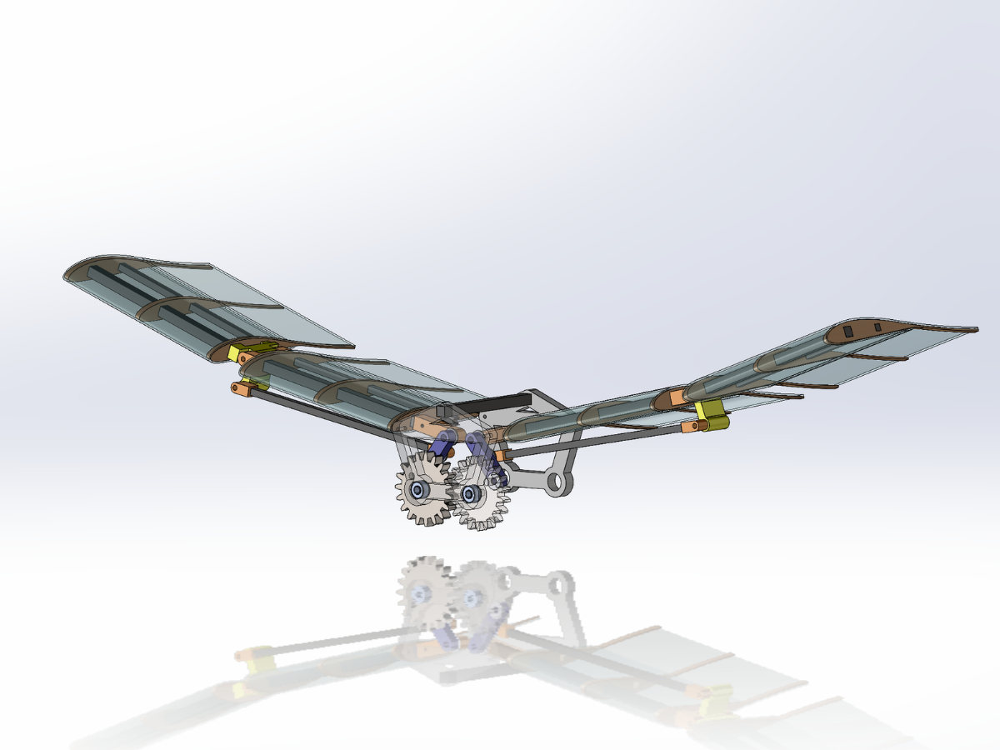
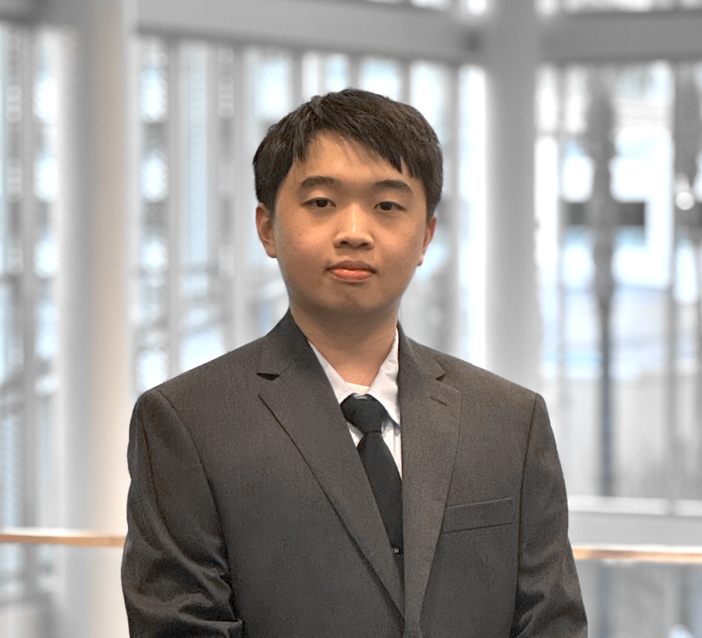
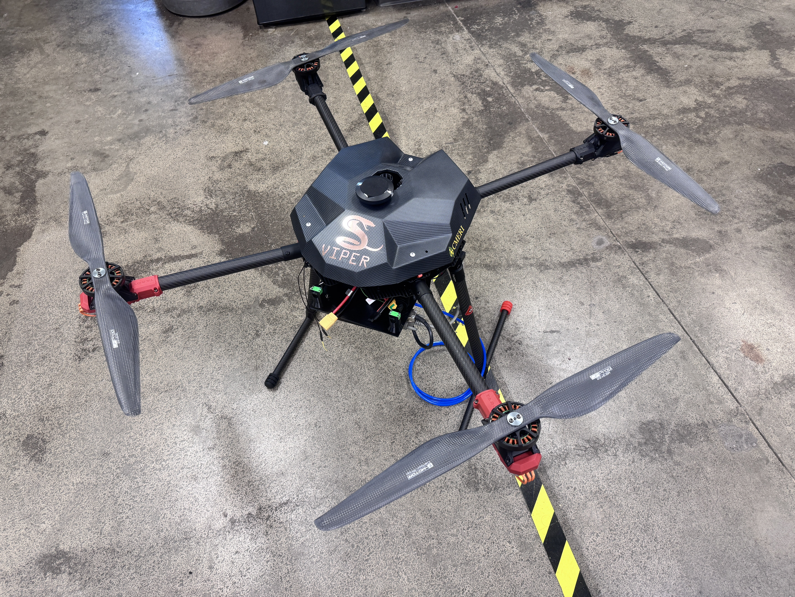
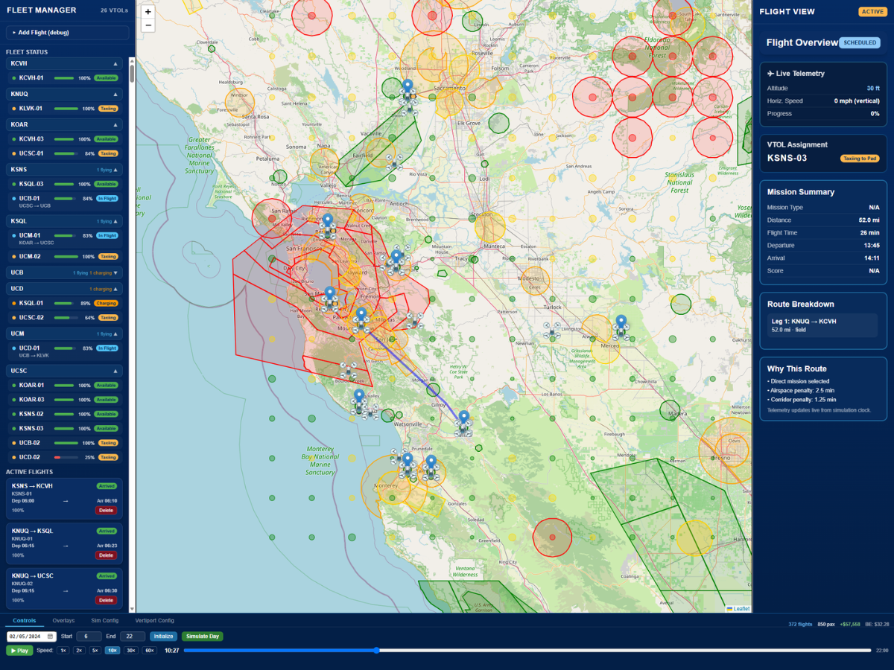
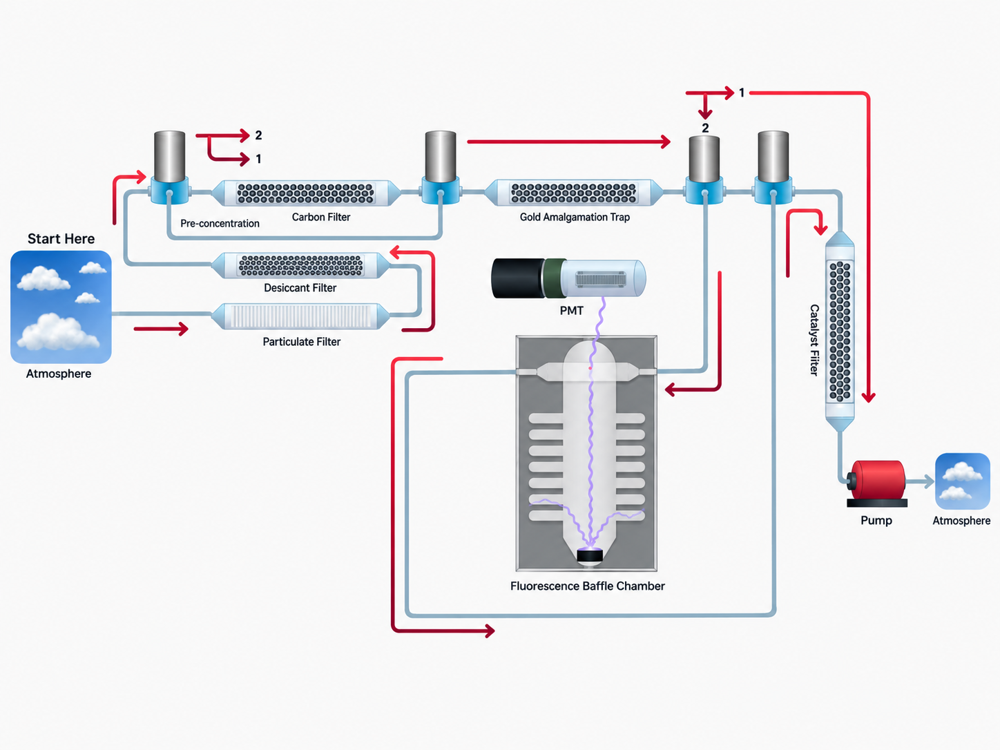

01 / Mechanisms / Mechanical designIn progress
Flapping-Wing Ornithopter
Mechanical design of a lightweight crank-driven flapping-wing aircraft.
Explore projectMECHANICAL ENGINEERING / UC MERCED
Mechanical Engineering student focused on electromechanical systems, sensing, controls, and hands-on product development.
I design and build electromechanical systems spanning mechanisms, autonomous platforms, sensing, controls, and simulation.

SELECTED WORK

Mechanical design of a lightweight crank-driven flapping-wing aircraft.
Explore project
UAV and ground-robot platforms supporting autonomous gas-source localization and environmental sensing research.
Explore project
Graph-based routing and simulation for eVTOL operations under weather, airspace, hazard, and range constraints.
Explore project
04 / Sensing / System integrationCompact mercury-detection payload concept involving optical sensing, flow-path redesign, and LED-control electronics.
Explore project ↗ 05 / Robotics / Controls
05 / Robotics / ControlsIMU sensor fusion and nested feedback control for a two-wheeled inverted-pendulum platform.
Explore project ↗